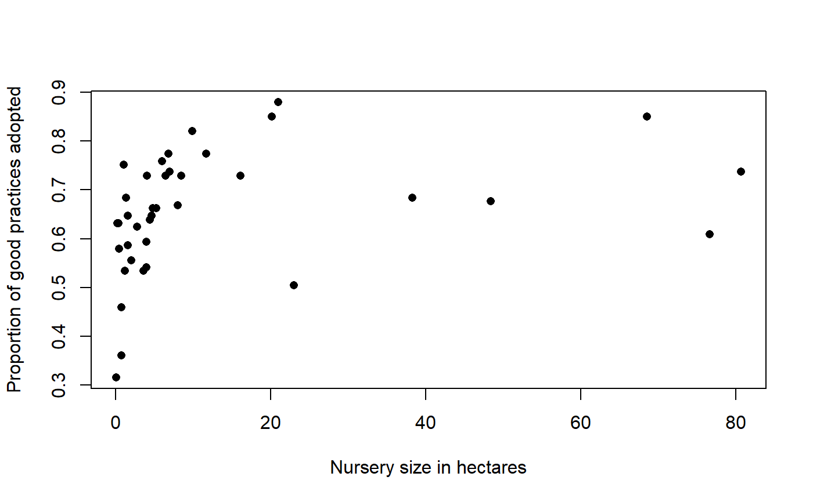
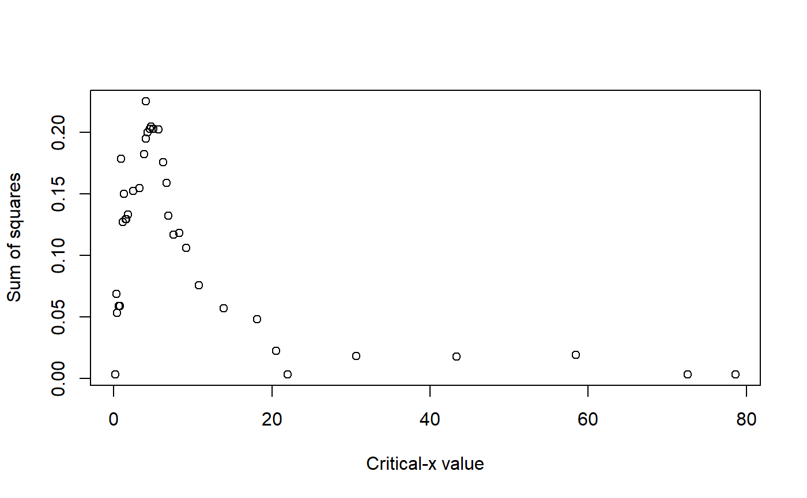
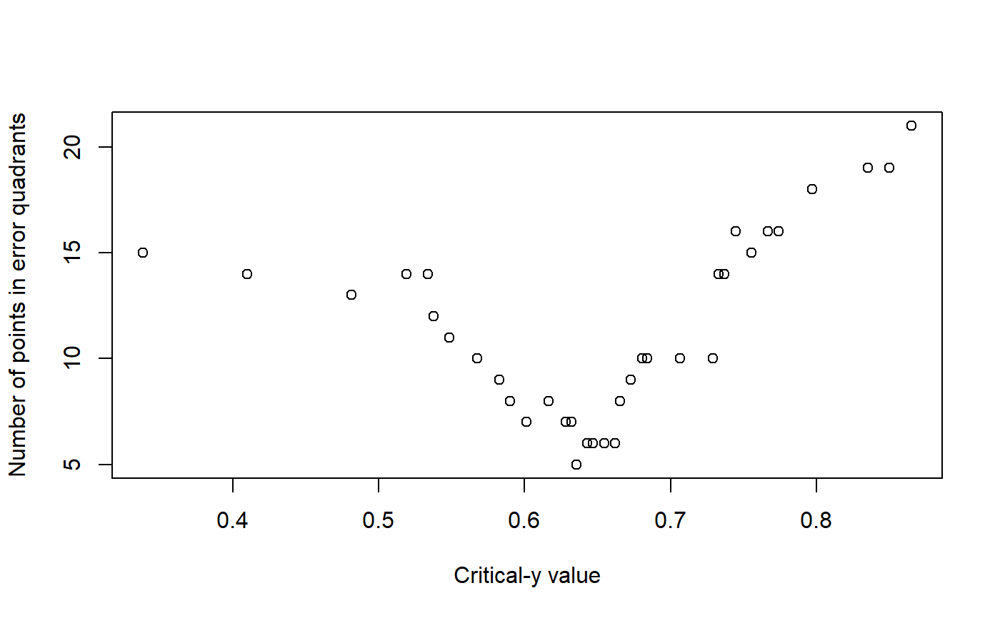
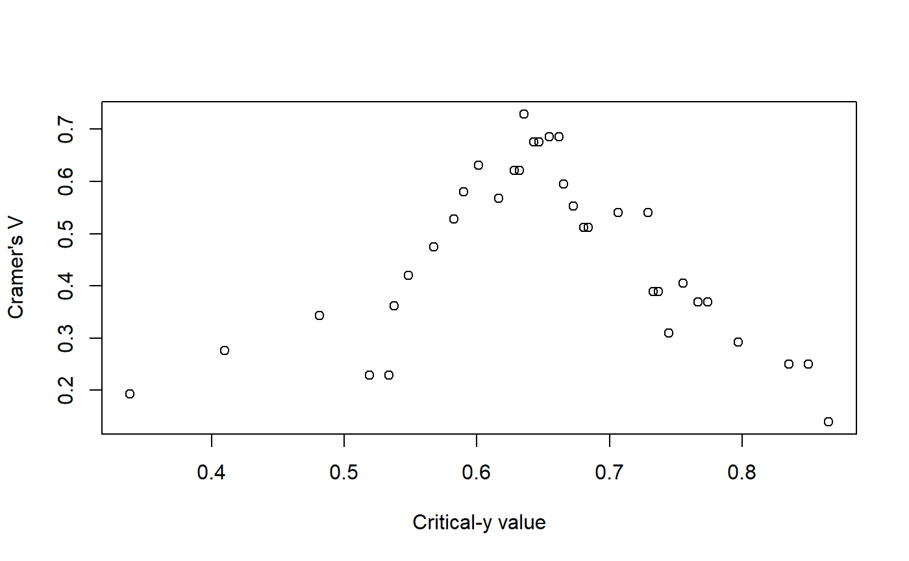
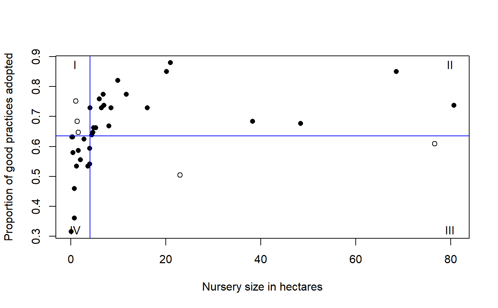

cateNelson.RdProduces critical-x and critical-y values for bivariate data according to a Cate-Nelson analysis.
cateNelson(x, y, plotit = TRUE, hollow = TRUE, xlab = "X", ylab = "Y", trend = "positive", clx = 1, cly = 1, xthreshold = 0.1, ythreshold = 0.1, progress = TRUE, verbose = TRUE, listout = FALSE)
| x | A vector of values for the x variable. |
|---|---|
| y | A vector of values for the y variable. |
| plotit | If |
| hollow | If |
| xlab | The label for the x-axis. |
| ylab | The label for the y-axis. |
| trend |
|
| clx | Indicates which of the listed critical x values should be chosen as the critical x value for the final model. |
| cly | Indicates which of the listed critical y values should be chosen as the critical y value for the final model. |
| xthreshold | Indicates the proportion of potential critical x values
to display in the output. A value of |
| ythreshold | Indicates the proportion of potential critical y values
to display in the output. A value of |
| progress | If |
| verbose | If |
| listout | If |
A data frame of statistics from the analysis: number of observations, critical level for x, sum of squares, critical value for y, the number of observations in each of the quadrants (I, II, III, IV), the number of observations that conform with the model, the proportion of observations that conform with the model, the number of observations that do not conform to the model, the proportion of observations that do not conform to the model, a p-value for the Fisher exact test for the data divided into the groups indicated by the model, and Cramer's V for the data divided into the groups indicated by the model.
Output also includes printed lists of critical values, explanation of the values in the data frame, and plots: y vs. x; sum of squares vs. critical x value; the number of observations that do not conform to the model vs. critical y value; and y vs. x with the critical values shown as lines on the plot, and the quadrants labeled.
Cate-Nelson analysis divides bivariate data into two groups.
For data with a positive trend, one group has a
large x value associated with a large y value, and
the other group has a small x value associated with a small
y value. For a negative trend, a small x is
associated with a large y, and so on.
The analysis is useful for bivariate data which don't conform well to linear, curvilinear, or plateau models.
This function will fail if either of the largest two or smallest two x values are identical.
The method in this function follows Cate, R. B., & Nelson, L.A. (1971). A simple statistical procedure for partitioning soil test correlation data into two classes. Soil Science Society of America Proceedings 35, 658-660.
An earlier version of this function was published in Mangiafico, S.S. 2013. Cate-Nelson Analysis for Bivariate Data Using R-project. J.of Extension 51:5, 5TOT1.
http://rcompanion.org/rcompanion/h_02.html
data(Nurseries) cateNelson(x = Nurseries$Size, y = Nurseries$Proportion, plotit = TRUE, hollow = TRUE, xlab = "Nursery size in hectares", ylab = "Proportion of good practices adopted", trend = "positive", clx = 1, xthreshold = 0.10, ythreshold = 0.15)#> .................................. #> #> Critical x that maximize sum of squares: #> #> Critical.x.value Sum.of.squares #> 1 4.035 0.2254775 #> 2 4.740 0.2046979 #> ...................................... #> #> Critical y that minimize errors: #> #> Critical.y.value Q.i Q.ii Q.iii Q.iv Q.model Q.err Cramer.V #> 1 0.6355 3 20 2 13 33 5 0.7289 #> 2 0.6430 3 19 3 13 32 6 0.6761 #> 3 0.6470 3 19 3 13 32 6 0.6761 #> 4 0.6545 2 18 4 14 32 6 0.6854 #> 5 0.6620 2 18 4 14 32 6 0.6854 #> 6 0.6015 6 21 1 10 31 7 0.6309 #> 7 0.6280 5 20 2 11 31 7 0.6209 #> 8 0.6320 5 20 2 11 31 7 0.6209#> #> n = Number of observations #> CLx = Critical value of x #> SS = Sum of squares for that critical value of x #> CLy = Critical value of y #> Q = Number of observations which fall into quadrants I, II, III, IV #> Q.Model = Total observations which fall into the quadrants predicted by the model #> p.Model = Percent observations which fall into the quadrants predicted by the model #> Q.Error = Observations which do not fall into the quadrants predicted by the model #> p.Error = Percent observations which do not fall into the quadrants predicted by the model #> Fisher.p = p-value from Fisher exact test dividing data into these quadrants #> Cramer.V = Cramer's V statistic from dividing data into these quadrants #> #> Final model: #>#> n CLx SS CLy Q.I Q.II Q.III Q.IV Q.Model p.Model Q.Error #> 1 38 4.035 0.2254775 0.6355 3 20 2 13 33 0.8684211 5 #> p.Error Fisher.p.value Cramer.V #> 1 0.1315789 8.532968e-06 0.7289